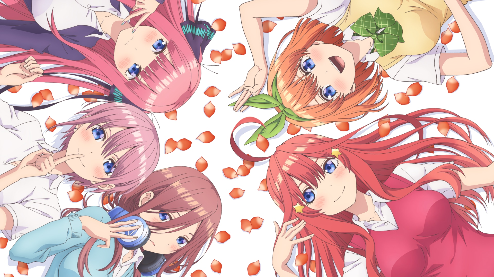

五等分の花嫁
あらすじ
風太郎の仕事は、五月を含む五つ子姉妹に勉強を教え、全員を高校卒業まで導くというものだった。
落第寸前の成績であるにもかかわらず勉強する意欲すら見せない5人に頭を抱える風太郎だったが、
夏祭りなどを通して五つ子と交流する中で、はじめから比較的協力的だった四女・四葉に加え、三女・三玖と
長女・一花の信頼を勝ち取ることに成功する。だが、次女・二乃と五女・五月の協力は得られないまま、
風太郎が家庭教師に就いて初となる中間試験を迎える。テストの結果は前回より上昇していたものの、
赤点は避けられなかったため、家庭教師を続ける条件として5人全員が赤点を回避することを課されていた
風太郎は、5人にアドバイスを残し去ろうとする。しかし、それまでは非協力的だった二乃が風太郎を庇って
嘘の報告を父親にしたことで、ひとまず家庭教師を続けられることになる。
